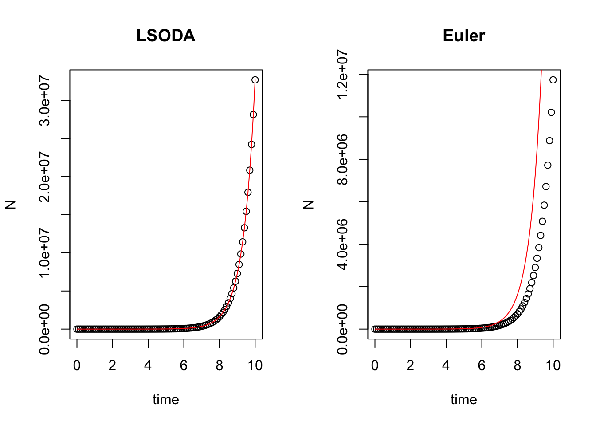
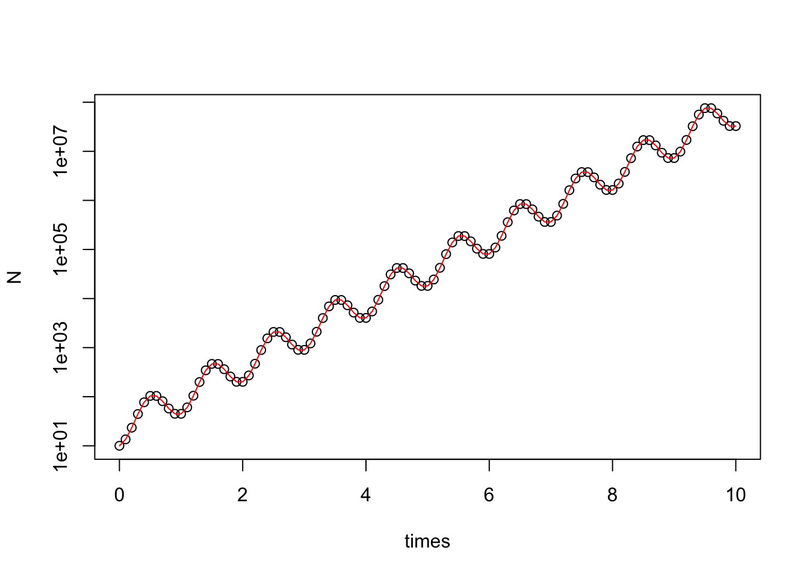

Week 2 - Exponential population growth
In part 1, we will solve the differential equation for exponential population growth and visualize how the population sizes change over time.
Part 1 - Numerical solution using the package “deSolve”
Two main phases:
Model specification: specify the structure of differential equation model
Model application: set the time steps, initial population size and model parameters (e.g., intrinsic population growth rate r), and then solve the equation model
Consider the model \[ \frac{dN}{dt} = rN \] where \(N\) is population size and \(r\) is the intrinsic growth rate.
###### part 1 ######
# install.packages("deSolve")
library(deSolve)
### (1) Model specification
exponential_model <- function(times, state, parms) {
with(as.list(c(state, parms)), {
dN_dt = r*N # exponential growth equation
return(list(c(dN_dt))) # return the results
})
}Set the time steps, initial population size and model parameters.
### (2) Model application
times <- seq(0, 10, by = 0.1) # time steps to integrate over
state <- c(N = 10) # initial population size
parms <- c(r = 1.5) # intrinsic growth rateSolve the equation by ode() numerically.
# run the ode solver
pop_size <- ode(func = exponential_model, times = times, y = state, parms = parms)
# take a look at the results
head(pop_size)## time N
## [1,] 0.0 10.00000
## [2,] 0.1 11.61834
## [3,] 0.2 13.49860
## [4,] 0.3 15.68313
## [5,] 0.4 18.22120
## [6,] 0.5 21.17002Visualization

Part 2 - Comparing different ode solvers
In default of ode(), the equations are solved by LSODA method. We can change the method by modifying the argument method in ode().
###### part 2 ######
# original setting
times <- seq(0, 10, by = 0.1) # time steps to integrate over
state <- c(N = 10) # initial population size
parms <- c(r = 1.5) # intrinsic growth rate
# default: LSODA
pop_size <- ode(func = exponential_model, times = times, y = state, parms = parms)
# Euler's method
pop_size_1 <- ode(func = exponential_model, times = times, y = state, parms = parms, method = "euler")
# compare different method
par(mfrow = c(1,2))
plot(N ~ time, data = pop_size, main = "LSODA")
curve(state[1]*exp(parms[1]*x), times[1], times[length(times)], col = "red", add = T) # correct curve
plot(N ~ time, data = pop_size_1, main = "Euler")
curve(state[1]*exp(parms[1]*x), times[1], times[length(times)], col = "red", add = T) # correct curve
# minimize the time step
times <- seq(0, 10, by = 0.01) # time steps to integrate over
state <- c(N = 10) # initial population size
parms <- c(r = 1.5) # intrinsic growth rate
# default: LSODA
pop_size <- ode(func = exponential_model, times = times, y = state, parms = parms)
# Euler's method
pop_size_1 <- ode(func = exponential_model, times = times, y = state, parms = parms, method = "euler")
# compare different method
par(mfrow = c(1,2))
plot(N ~ time, data = pop_size, main = "LSODA")
curve(state[1]*exp(parms[1]*x), times[1], times[length(times)], col = "red", add = T) # correct curve
plot(N ~ time, data = pop_size_1, main = "Euler")
curve(state[1]*exp(parms[1]*x), times[1], times[length(times)], col = "red", add = T) # correct curve
Part 3 - Solving exponential growth model with fluctuating growth rate
Consider the model
\[
\frac{dN}{dt} = r(t)N \ \text{, } r(t) = \overline{r} + \sigma\sin(\omega t)
\]
where \(\overline{r}\) and \(\omega\) are constants.
The analytical solution of the ode model is
\[
N(t) = N_0\exp\{\overline{r}t - \frac{\sigma}{\omega}[\cos(\omega t) - 1]\}
\]
###### part 3 ######
### Model specification
exponential_model_fluc <- function(times, state, parms) {
with(as.list(c(state, parms)), {
dN_dt = (r_bar + sigma*sin(omega*times))*N # exponential growth equation
return(list(c(dN_dt))) # return the results
})
}### Parameters
times <- seq(0, 10, by = 0.1) # time steps to integrate over
state <- c(N = 10) # initial population size
parms <- c(r_bar = 1.5, sigma = 5, omega = 2*pi) # intrinsic growth ratePlot \(r(t)\)

### Solving model
pop_size <- ode(func = exponential_model_fluc, times = times, y = state, parms = parms)
### Plotting
plot(N ~ times, data = pop_size)
curve(state[1]*exp(parms[1]*x - parms[2]/parms[3]*(cos(parms[3]*x) - 1)), add = T, col = "red") # correct curve
plot(N ~ times, data = pop_size, log = "y")
curve(state[1]*exp(parms[1]*x - parms[2]/parms[3]*(cos(parms[3]*x) - 1)), add = T, col = "red") # correct curve
Adjust \(\overline{r}\)
### Parameters
times <- seq(0, 10, by = 0.1) # time steps to integrate over
state <- c(N = 10) # initial population size
parms <- c(r_bar = 0.1, sigma = 5, omega = 2*pi) # intrinsic growth rate
### Fluctuating growth rate
r = parms[1] + parms[2]*sin(parms[3]*times)
plot(r ~ times, type = "l")### Solving model
pop_size <- ode(func = exponential_model_fluc, times = times, y = state, parms = parms)
### Plotting
plot(N ~ times, data = pop_size)
curve(state[1]*exp(parms[1]*x - parms[2]/parms[3]*(cos(parms[3]*x) - 1)), add = T, col = "red") # correct curve